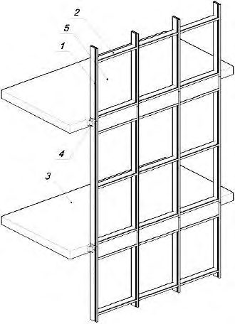
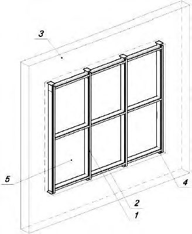
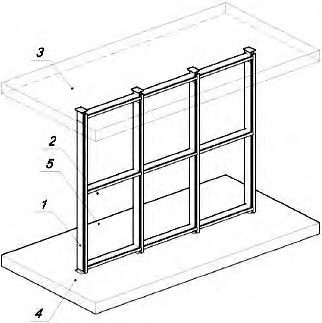
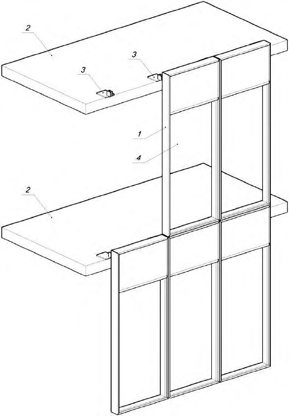
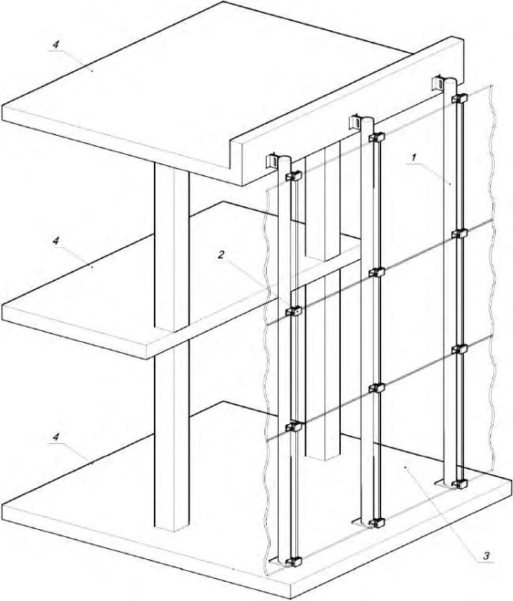
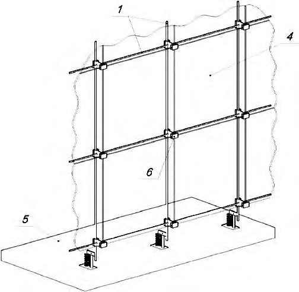
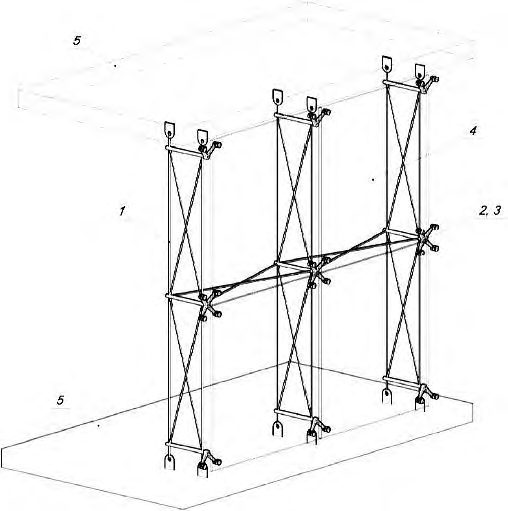
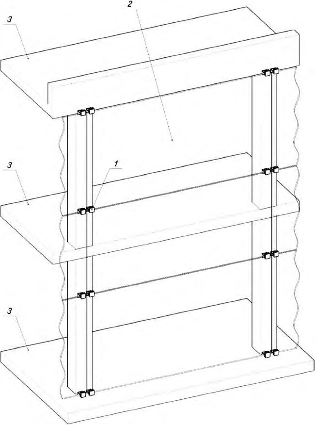
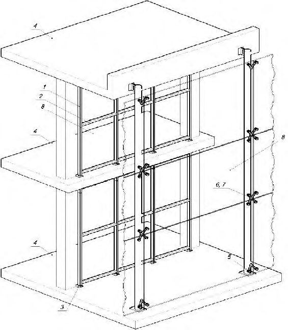

СП 426.1325800.2020 «Конструкции фасадные светопрозрачные зданий и сооружений. П»
О документе: разработчики, утверждение, регистрация, ключевые слова
СВОД ПРАВИЛ
СП 426.1325800.2020
1 ИСПОЛНИТЕЛЬ - НИИСФ РААСН
2 ВНЕСЕН Техническим комитетом по стандартизации ТК 465 «Строительство»
3 ПОДГОТОВЛЕН к утверждению Департаментом градостроительной деятельности и архитектуры Министерства строительства и жилищно-коммунального хозяйства Российской Федерации (Минстрой России)
4 УТВЕРЖДЕН приказом Министерства строительства и жилищнокоммунального хозяйства Российской Федерации от 30 декабря 2020 г. № 896/пр и введен в действие с 1 июля 2021 г.
5 ЗАРЕГИСТРИРОВАН Федеральным агентством по техническому регулированию и метрологии (Росстандарт). Пересмотр СП 426.1325800.2018 Конструкции фасадные светопрозрачные зданий и сооружений. Правила проектирования
В случае пересмотра (замены) или отмены настоящего свода правил соответствующее уведомление будет опубликовано в установленном порядке. Соответствующая информация, уведомление и тексты размещаются также в информационной системе общего пользования - на официальном сайте разработчика (Минстрой России) в сети Интернет
© Минстрой России, 2020
Настоящий нормативный документ не может быть полностью или частично воспроизведен, тиражирован и распространен в качестве официального издания на территории Российской Федерации без разрешения Минстроя России
- 1 Область применения
- 2
- Нормативные ссылки
- 3 Термины и определения
- 4 Общие положения
- 5
- Проектирование СПК
- 5.1 Цели и задачи
- 5.2 Классификационная структура СПК
- 5.3 Обеспечение несущей способности и допустимых перемещений
- 5.4 Требования к обеспечению основных эксплуатационно-технических характеристик
- 5.5 Конструктивные требования
- 6 Требования к светопрозрачному заполнению СПК………………………………………
- 6.1 Общие требования
- 6.2 Требования к элементам крепления светопрозрачного заполнения………………
- 6.3 Расчет прочности и перемещений светопрозрачного заполнения……………………
- 6.4 Определение нагрузок, действующих на светопрозрачное заполнение
- 6.5 Правила безопасной эксплуатации светопрозрачного заполнения
7 Противопожарные требования
8 Испытания СПК
Приложение А Рекомендуемые этапы при проектировании СПК
Приложение Б Схемы несущего каркаса светопрозрачных ограждающих
конструкций
Приложение В Рекомендации к определению требований к безопасному остеклению объектов с массовым пребыванием людей
Приложение Г Перечень классификационных групп зданий, при проектировании
которых рекомендуется использовать защитное остекление
Приложение Д Рекомендации по проектированию взрывостойкого остекления
Приложение Е Рекомендации по проектированию огнестойких светопрозрачных конструкций……………………………………………………………
Приложение Ж Рекомендации по проектированию СПК с пулестойким остеклением
Приложение И Рекомендации по проектированию шумозащитного остекления
Приложение К Рекомендации по проектированию ударостойкого остекления
Приложение Л Рекомендации по проектированию взломостойкого остекления
Приложение М Рекомендации по проектированию остекления со специальными требованиями……………………………………………………….
Приложение Н Обработка края листов стекла и края отверстий для применения в СПК. Требования к отверстиям в стекле……………………….
Библиография
Дата введения - 2021-07-01
УДК
ОКС 91.040.99
Ключевые слова: конструкции ограждающие светопрозрачные, светопрозрачное заполнение, остекление
\_\_\_\_\_\_\_\_\_\_\_\_\_\_\_\_\_\_\_\_\_\_\_\_\_\_\_\_\_\_\_\_\_\_\_\_\_\_\_\_\_\_\_\_\_\_\_\_\_\_\_\_\_\_\_\_\_\_\_\_\_\_\_\_\_\_\_\_\_\_\_\_\_\_\_
ИСПОЛНИТЕЛЬ
НИИСФ РААСН
наименование организации
Руководитель
разработки
Директор
И.Л. Шубин
СОИСПОЛНИТЕЛЬ
АО «Институт Стекла»
наименование организации
Руководитель
темы
Заведующий отделом
стандартизации и
испытаний
А.Г. Чесноков
Введение
Настоящий свод правил разработан в целях обеспечения соблюдения требований Федерального закона от 30 декабря 2009 г. № 384-ФЗ «Технический регламент о безопасности зданий и сооружений». Кроме того, применение настоящего свода правил обеспечивает соблюдение федеральных законов от 22 июля 2008 г. № 123-ФЗ «Технический регламент о требованиях пожарной безопасности», от 23 ноября 2009 г. № 261-Ф3 «Об энергосбережении и о повышении энергоэффективности и о внесении изменений в отдельные законодательные акты Российской Федерации». Настоящий свод правил содержит требования по проектированию светопрозрачных ограждающих конструкций.
Пересмотр свода правил разработан авторским коллективом: НИИСФ РААСН (д-р техн. наук И.Л. Шубин , канд. техн. наук А.В. Спиридонов ), Союз Стекольных Предприятий ( С.В. Секин ), АО «Институт стекла» (канд. техн. наук А.Г. Чесноков, О.А. Емельянова , канд. техн. наук О.А. Гладушко, Е.А. Черемхина, С.А. Чесноков ), АО «Эй Джи Си Флэт Глас Клин» (канд. хим. наук М.И. Смирнов ), ООО «Империя» ( А.В. Митяев ), АО «РСК» ( А.В. Мокеева ) при участии АО «ЦНИИПромзданий» ( К.В. Авдеев, канд. техн. наук К.Г. Вахрушев) в разделах 1-5.
1Область применения
- легкосбрасываемых фасадных конструкций;
- светопрозрачных конструкций с заполнением из мембран и поликарбоната.
2Нормативные ссылки
В настоящем своде правил использованы нормативные ссылки на следующие документы:
ГОСТ 4.224-83 Система показателей качества продукции. Строительство. Материалы и изделия полимерные строительные герметизирующие и уплотняющие. Номенклатура показателей
ГОСТ 9.005-72 Единая система защиты от коррозии и старения. Металлы, сплавы, металлические и неметаллические неорганические покрытия. Допустимые и недопустимые контакты с металлами и неметаллами
- ГОСТ 12.1.033-81 Система стандартов безопасности труда. Пожарная безопасность. Термины и определения
- ГОСТ 111-2014 Стекло листовое бесцветное. Технические условия
- ГОСТ 380-2005 Сталь углеродистая обыкновенного качества. Марки
- ГОСТ 5533-2013 Стекло узорчатое. Технические условия
- ГОСТ 7481-2013 Стекло армированное. Технические условия
- ГОСТ 9272-2017 Блоки стеклянные пустотелые. Технические условия
- ГОСТ 9900-2013 Стекло и изделия из него. Методы определения механических свойств. Определение модуля упругости при поперечном статическом изгибе
ГОСТ 10134.0-2017 Стекло и изделия из него. Методы определения химической стойкости. Общие требования
ГОСТ 10134.1-2017 Стекло и изделия из него. Методы определения химической стойкости. Определение водостойкости при 98 °С
КОНСТРУКЦИИ ОГРАЖДАЮЩИЕ СВЕТОПРОЗРАЧНЫЕ ЗДАНИЙ И СООРУЖЕНИЙ
Правила проектирования
The translucent enclosing structures of buildings and structures. Design rules
ГОСТ 10134.2-2017 Стекло и изделия из него. Методы определения химической стойкости. Определение кислотостойкости ГОСТ 10134.3-2017 Стекло и изделия из него. Методы определения химической стойкости. Определение щелочестойкости ГОСТ 11067-2013 Стекло и изделия из него. Методы определения механических свойств. Определение ударной вязкости ГОСТ 11103-2018 Стекло неорганическое и стеклокристаллические материалы. Метод определения термостойкости ГОСТ 17716-2014 Зеркала. Общие технические условия ГОСТ 20403-75 Резина. Метод определения твердости в международных единицах (от 30 до 100 IRHD) ГОСТ 22233-2018 Профили прессованные из алюминиевых сплавов для ограждающих конструкций. Технические условия ГОСТ 24866-2014 Стеклопакеты клееные. Технические условия ГОСТ 25535-2013 Стекло и изделия из него. Методы определения термостойкости ГОСТ 25621-83 Материалы и изделия полимерные строительные герметизирующие и уплотняющие. Классификация и общие технические требования ГОСТ 26302-93 Стекло. Методы определения коэффициентов направленного пропускания и отражения света ГОСТ 26602.3-2016 Блоки оконные и дверные. Метод определения звукоизоляции ГОСТ 27751-2014 Надежность строительных конструкций и оснований. Основные положения ГОСТ 27772-2015 Прокат для строительных стальных конструкций. Общие технические условия ГОСТ 28778-90 Болты самоанкерующиеся распорные для строительства. Технические условия ГОСТ 30244-94 Материалы строительные. Методы испытаний на горючесть ГОСТ 30247.0-94 Конструкции строительные. Методы испытаний на огнестойкость. Общие требования ГОСТ 30247.1-94 (ИСО 834-75) Конструкции строительные. Методы испытаний на огнестойкость. Несущие и ограждающие конструкции ГОСТ 30698-2014 Стекло закаленное. Технические условия ГОСТ 30733-2014 Стекло с низкоэмиссионным твердым покрытием. Технические условия ГОСТ 30778-2001 Прокладки уплотняющие из эластомерных материалов для оконных и дверных блоков. Технические условия ГОСТ 30779-2014 Стеклопакеты клееные. Метод оценки долговечности ГОСТ 30826-2014 Стекло многослойное. Технические условия ГОСТ 30971-2012 Швы монтажные узлов примыкания оконных блоков к стеновым проемам. Общие технические условия ГОСТ 30972-2002 Заготовки и детали деревянные клееные для оконных и дверных блоков. Технические условия ГОСТ 31364-2014 Стекло с низкоэмиссионным мягким покрытием. Технические условия ГОСТ 31462-2011 Блоки оконные защитные. Общие технические условия ГОСТ 32278-2013 Стекло и изделия из него. Методы определения оптических характеристик. Определение цветовых координат
ГОСТ 32280-2013 Стекло и изделия из него. Методы определения механических свойств. Определение стойкости к статической нагрузке
ГОСТ 32281.1-2013 (EN 1288-1:2000) Стекло и изделия из него. Определение прочности на изгиб. Основные принципы проведения испытаний
ГОСТ 32281.2-2013 (EN 1288-2:2000) Стекло и изделия из него. Определение прочности на изгиб. Испытание двойным соосным кольцом на плоских образцах с большими площадями испытываемых поверхностей
ГОСТ 32281.3-2013 (EN 1288-3:2000) Стекло и изделия из него. Определение прочности на изгиб. Испытание на образце, опирающемся на две точки (четыре точки изгиба)
ГОСТ 32281.5-2013 (EN 1288-5:2000) Стекло и изделия из него. Определение прочности на изгиб. Испытание двойным соосным кольцом на плоских образцах с небольшими площадями испытываемых поверхностей
ГОСТ 32298-2013 (EN 12603:2002) Стекло и изделия из него. Порядок определения критерия согласия и доверительных интервалов по распределению Вейбулла для значений прочности стекла
ГОСТ 32357-2013 Стекло и изделия из него. Метод испытания кипячением (температуростойкость)
ГОСТ 32360-2013 Стекло матированное. Технические условия
ГОСТ 32361-2013 Стекло и изделия из него. Пороки. Термины и определения
ГОСТ 32530-2013 Стекло и изделия из него. Маркировка, упаковка, транспортирование, хранение
ГОСТ 32539-2013 Стекло и изделия из него. Термины и определения
ГОСТ 32559-2013 Стекло с лакокрасочным покрытием. Технические условия
ГОСТ 32562.1-2013 (EN 1096-1:2012) Стекло с покрытием. Классификация
ГОСТ 32562.2-2013 (EN 1096-2:2012) Стекло с покрытием. Методы испытаний для покрытий классов А, В, S
ГОСТ 32562.3-2013 (EN 1096-3:2012) Стекло с покрытием. Методы испытаний для покрытий классов С и D
ГОСТ 32562.4-2013 (EN 1096-4:2004) Стекло с покрытием. Правила приемки ГОСТ 32563-2013 Стекло с полимерными пленками. Технические условия
ГОСТ 32564.1-2013 (ISO 16936-1:2005) Стекло и изделия из него. Метод испытания на стойкость к удару шаром
ГОСТ 32564.2-2013 (ISO 16936-2:2005) Стекло и изделия из него. Метод испытания на стойкость к удару топором и молотком
ГОСТ 32566-2013 Стекло и изделия из него. Метод испытаний на пулестойкость ГОСТ 32996-2014 Стекло и изделия из него. Методы испытаний на стойкость к климатическим воздействиям. Испытание на морозостойкость
ГОСТ 32997-2014 Стекло листовое, окрашенное в массе. Общие технические условия
ГОСТ 32998.4-2014 Стеклопакеты клееные. Методы определения физических характеристик герметизирующих слоев
ГОСТ 32999-2014 Стекло и изделия из него. Метод испытания на стойкость к соляному туману
ГОСТ 33000-2014 Стекло и изделия из него. Метод испытания на огнестойкость
- ГОСТ 33001-2014 Стекло и изделия из него. Методы определения механических свойств. Испытание на стойкость к истиранию
ГОСТ 33002-2014 Стекло и изделия из него. Методы определения механических свойств. Испытания на характер разрушения
ГОСТ 33003-2014 Стекло и изделия из него. Методы определения оптических
искажений
ГОСТ 33004-2014 Стекло и изделия из него. Характеристики. Термины и определения
ГОСТ 33017-2014 Стекло с солнцезащитным или декоративным твердым покрытием. Технические условия ГОСТ 33079-2014 Конструкции фасадные светопрозрачные навесные. Классификация. Термины и определения ГОСТ 33080-2014 Конструкции деревянные. Классы прочности конструкционных пиломатериалов и методы их определения ГОСТ 33086-2014 Стекло с солнцезащитным или декоративным мягким покрытием. Технические условия ГОСТ 33087-2014 Стекло термоупрочненное. Технические условия ГОСТ 33088-2014 Стекло и изделия из него. Метод испытания на влагостойкость ГОСТ 33089-2014 Стекло и изделия из него. Метод испытания на стойкость к ультрафиолетовому излучению ГОСТ 33090-2014 (ISO 16940:2008) Стекло и изделия из него. Метод определения звукоизолирующей способности ГОСТ 33559-2015 Стекло и изделия из него. Метод испытания на стойкость к удару мягким телом ГОСТ 33560-2015 Стекло и изделия из него. Требования безопасности при обращении со стеклом ГОСТ 33561-2015 Стекло и изделия из него. Указания по эксплуатации ГОСТ 33575-2015 Стекло с самоочищающимся покрытием. Технические условия ГОСТ 33792-2016 Конструкции фасадные светопрозрачные. Методы определения воздухо- и водопроницаемости ГОСТ 33793-2016 Конструкции фасадные светопрозрачные. Методы определения сопротивления ветровой нагрузке ГОСТ 33891-2016 Стекло закаленное эмалированное (стемалит). Технические условия ГОСТ EN 410-2014 Стекло и изделия из него. Методы определения оптических характеристик. Определение световых и солнечных характеристик ГОСТ EN 572-1-2016 Стекло натрий-кальций-силикатное. Основные характеристики ГОСТ EN 572-7-2017 Стекло профильное. Технические требования ГОСТ EN 673-2016 Стекло и изделия из него. Методы определения тепловых характеристик. Метод расчета сопротивления теплопередаче ГОСТ EN 674-2016 Стекло и изделия из него. Методы определения тепловых характеристик. Определение сопротивления теплопередаче методом защищенной горячей пластины ГОСТ EN 675-2014 Стекло и изделия из него. Методы определения тепловых характеристик. Определение сопротивления теплопередаче методом измерения теплового потока ГОСТ EN 1748-1-1-2016 Стекло боросиликатное. Технические требования ГОСТ EN 1748-2-1-2016 Стеклокерамика. Технические требования ГОСТ EN 12600-2015 Стекло и изделия из него. Метод испытания на стойкость к удару двойной шиной ГОСТ EN 12758-2015 Стекло и изделия из него. Показатели звукоизоляции ГОСТ EN 12898-2014 Стекло и изделия из него. Методы определения тепловых характеристик. Определение коэффициента эмиссии ГОСТ EN 13541-2013 Стекло и изделия из него. Метод испытания на стойкость к воздействию взрыва
ГОСТ EN 14178-1-2016 Стекло щелочноземельное силикатное. Технические требования
ГОСТ EN 14179-1-2015 Стекло закаленное термовыдержанное. Технические требования
ГОСТ EN 14321-1-2015 Стекло закаленное щелочноземельное силикатное. Технические требования
ГОСТ EN 15683-1-2017 Стекло закаленное профильное. Технические требования ГОСТ ISO 11479-2-2017 Стекло с покрытием. Остекление фасадов. Общие требования к оценке цвета
ГОСТ ISO 11485-1-2016 Стекло моллированное. Термины и определения
ГОСТ ISO 11485-2-2016 Стекло моллированное. Технические требования
ГОСТ ISO 11485-3-2016 Стекло моллированное. Закаленное и многослойное стекло. Технические требования
ГОСТ ISO 14438-2014 Стекло и изделия из него. Определение значения энергетического баланса. Метод расчета
ГОСТ ISO 16932-2014 Стекло и изделия из него. Защитное остекление, стойкое к воздействию бурь. Метод испытания и классификация
ГОСТ Р 51112-97 Средства защитные банковские. Требования по пулестойкости и методы испытаний
ГОСТ Р 53308-2009 Конструкции строительные. Светопрозрачные ограждающие конструкции и заполнения проемов. Метод испытаний на огнестойкость
ГОСТ Р 54858-2011 Конструкции фасадные светопрозрачные. Метод определения приведенного сопротивления теплопередаче
ГОСТ Р 56728-2015 Здания и сооружения. Методика определения ветровых нагрузок на ограждающие конструкции
ГОСТ Р 56769-2015 (ИСО 717-1:2013) Здания и сооружения. Оценка звукоизоляции воздушного шума
ГОСТ Р 56926-2016 Конструкции оконные и балконные различного функционального назначения для жилых зданий. Общие технические условия
ГОСТ Р 57787-2017 Крепления анкерные для строительства. Термины и определения. Классификация
ГОСТ Р ИСО 10140-1-2012 Акустика. Лабораторные измерения звукоизоляции элементов зданий. Часть 1. Правила испытаний строительных изделий определенного вида
ГОСТ Р ИСО 10140-2-2012 Акустика. Лабораторные измерения звукоизоляции элементов зданий. Часть 2. Измерение звукоизоляции воздушного шума
ГОСТ Р ИСО 10140-3-2012 Акустика. Лабораторные измерения звукоизоляции элементов зданий. Часть 3. Измерение звукоизоляции ударного шума
ГОСТ Р ИСО 10140-4-2012 Акустика. Лабораторные измерения звукоизоляции элементов зданий. Часть 4. Методы и условия измерений
ГОСТ Р ЕН 1363-2-2014 Конструкции строительные. Испытания на огнестойкость. Альтернативные и дополнительные методы
СП 1.13130.2020 Системы противопожарной защиты. Эвакуационные пути и выходы
- СП 2.13130.2020 Системы противопожарной защиты. Обеспечение огнестойкости объектов защиты
- СП 4.13130.2013 Системы противопожарной защиты. Ограничение распространения пожара на объектах защиты. Требования к объемно-планировочным и конструктивным решениям (с изменением № 1)
- СП 14.13330.2018 «СНиП II-7-81* Строительство в сейсмических районах» (с изменением № 1)
- СП 16.13330.2017 «СНиП II-23-81* Стальные конструкции» (с изменениями № 1, № 2)
- СП 17.13330.2017 «СНиП II-26-76 Кровли» (с изменением № 1)
- СП 20.13330.2016 «СНиП 2.01.07-85* Нагрузки и воздействия» (с изменениями № 1, № 2)
- СП 28.13330.2017 «СНиП 2.03.11-85 Защита строительных конструкций от коррозии» (с изменениями № 1, № 2)
- СП 50.13330.2012 «СНиП 23-02-2003 Тепловая защита зданий» (с изменением № 1)
- СП 51.13330.2011 «СНиП 23-03-2003 Защита от шума» (с изменением № 1)
- СП 52.13330.2016 «СНиП 23-05-95* Естественное и искусственное освещение» (с изменением № 1)
- СП 54.13330.2016 «СНиП 31-01-2003 Здания жилые многоквартирные» (с изменениями № 1, № 2, № 3)
- СП 64.13330.2017 «СНиП II-25-80 Деревянные конструкции» (с изменениями № 1, № 2)
- СП 118.13330.2012 «СНиП 31-06-2009 Общественные здания и сооружения» (с изменениями № 1, № 2, № 3, № 4)
- СП 128.13330.2016 «СНиП 2.03.06-85 Алюминиевые конструкции»
- СП 131.13330.2018 «СНиП 23-01-99* Строительная климатология»
- СП 230.1325800.2015 Конструкции ограждающие зданий. Характеристики теплотехнических неоднородностей (с изменением № 1)
- СП 260.1325800.2016 Конструкции стальные тонкостенные из холодногнутых оцинкованных профилей и гофрированных листов. Правила проектирования (с изменением № 1)
- СП 267.1325800.2016 Здания и комплексы высотные. Правила проектирования
- СП 275.1325800.2016 Конструкции ограждающие жилых и общественных зданий. Правила проектирования звукоизоляции
- СП 363.1325800.2017 Покрытия светопрозрачные и фонари зданий и сооружений. Правила проектирования
- СП 367.1325800.2017 Здания жилые и общественные. Правила проектирования естественного и совмещенного освещения
- СанПиН 2.2.1/2.1.1.1076-01 Гигиенические требования к инсоляции и солнцезащите помещений жилых и общественных зданий и территорий
СанПиН 2.2.1/2.1.1.1278-03 Гигиенические требования к естественному, искусственному и совмещенному освещению жилых и общественных зданий
- СН 2.2.4/2.1.8.562-96 Шум на рабочих местах, в помещениях жилых, общественных зданий и на территории жилой застройки
- Примечание - При пользовании настоящим сводом правил целесообразно проверить действие ссылочных документов в информационной системе общего пользования - на официальном сайте федерального органа исполнительной власти в сфере стандартизации в сети Интернет или по ежегодному указателю «Национальные стандарты», который опубликован по состоянию на 1 января текущего года, и по выпускам ежемесячного информационного указателя «Национальные стандарты» за текущий год. Если заменен ссылочный документ, на который дана недатированная ссылка, то рекомендуется использовать действующую версию этого документа с учетом всех внесенных в данную версию изменений. Если заменен ссылочный документ, на который дана датированная ссылка, то рекомендуется использовать версию этого документа с указанным выше годом утверждения (принятия). Если после утверждения настоящего свода правил в ссылочный документ, на который дана датированная ссылка, внесено изменение, затрагивающее положение, на которое дана ссылка, то это положение рекомендуется применять без учета данного изменения. Если ссылочный документ отменен без замены, то положение, в котором дана ссылка на него, рекомендуется применять в части, не затрагивающей эту ссылку. Сведения о действии сводов правил целесообразно проверить в Федеральном информационном фонде стандартов.
3Термины и определения
В настоящем своде правил применены термины по [1], [2], [3], [4], ГОСТ 12.1.033, ГОСТ 32361, ГОСТ 32539, ГОСТ 33004, ГОСТ 33079, ГОСТ ISO 11485-1, ГОСТ Р 56926, СП 17.13330, СП 50.13330, СП 54.13330, СП 51.13330, СП 118.13330, СП 128.13330, ГОСТ Р 56769, ГОСТ Р 57787, а также следующие термины с соответствующими определениями:
- 3.1декоративная крышка
- Линейный элемент, расположенный снаружи СПК, закрепленный на прижимную планку и выполняющий архитектурно-декоративную функцию.
- 3.2заполнение (остекление)
- Светопрозрачные и непрозрачные элементы из стекла, отделяющие одно помещение здания от наружной среды или другого помещения и закрепленные к каркасу СПК. Примечание - Заполнение может включать открывающиеся и неоткрывающиеся части/элементы.
- 3.3каркас светопрозрачных конструкций
- Конструкция, воспринимающая нагрузки и воздействия, действующие на СПК, и передающая их на несущую конструкцию здания.
- 3.4клей-герметик
- Эластичная полимерная композиция, используемая в СПК с клеевым типом крепления остекления и обеспечивающая передачу нагрузки от остекления на каркас (функцию крепежного элемента).
- 3.5конструкция ограждающая светопрозрачная; СПК
- Ненесущая конструкция, состоящая из каркаса, крепежных элементов, уплотнителей и светопрозрачного и (или) непрозрачного остекления. Примечание - СПК может включать открывающиеся и неоткрывающиеся части/элементы.
- 3.6конструкция фасадная светопрозрачная; КФС
- Наружная ненесущая стена, состоящая из каркаса, крепежных элементов, уплотнителей и светопрозрачного и (или) непрозрачного остекления.
- 3.7кронштейн
- Элемент СПК, предназначенный для крепления других элементов СПК к конструкциям зданий и сооружений.
- 3.8остекление строительных конструкций
- Применение стекла и изделий из него в строительных конструкциях.
- 3.9прижимная планка
- Линейный элемент каркаса СПК, предназначенный для крепления соседних элементов остекления по их краям снаружи и представляющий собой профилированную пластину с уплотнителем, закрепляемую к элементам каркаса с помощью метизов.
- 3.10ригель
- Горизонтальный элемент каркаса СПК.
- 3.11система отвода воды
- Конструктивные мероприятия, исключающие накопление влаги во внутренних полостях СПК и проникновение ее в помещение, а также обеспечивающие контролируемое или самотечное водоотведение.
- 3.12стойка
- Вертикальный элемент каркаса СПК.
- 3.13температурная деформация СПК
- Деформация элементов каркаса СПК и заполнения, включая открывающиеся элементы, обусловленная действием на конструкцию перепада температуры воздуха.
- 3.14термовставка
- Элемент конструкции комбинированного профиля каркаса СПК, обладающий меньшей, чем материал профиля, теплопроводностью.
- 3.15уплотнитель
- Профиль, обеспечивающий плотное сопряжение профиля и остекления открывающихся и неподвижных частей СПК, выполненный из эластичного полимерного материала с заданной формой поперечного сечения или формируемый герметиками.
- 3.16штапик
- Линейный элемент каркаса СПК, предназначенный для механического крепления одного края остекления изнутри или снаружи и представляющий собой профиль с уплотнителем, закрепляемый к элементам каркаса с помощью предварительной упругой деформации (защелкивания) и (или) с помощью метизов.
- 3.17эксплуатационный диапазон СПК
- Максимальные и минимальные значения температурно-климатических воздействий на СПК (температуры и влажности воздуха, скорости ветра, давления), при которых определены теплотехнические характеристики СПК (приведенное сопротивление теплопередаче, температура на внутренней поверхности конструкции, воздухопроницаемость).
4Общие положения
- механическая прочность и устойчивость;
- безопасность в эксплуатации (предотвращение травм осколками стекла, падения через светопрозрачную конструкцию);
- защита от несанкционированного проникновения;
- взрывостойкость и взрывоустойчивость (защита от террористических атак), а также безопасность при взрыве;
- пулестойкость (стойкость к выстрелам из огнестрельного оружия);
- защита от поражающих факторов пожара, огнестойкость и стойкость к внешнему огню;
- безопасность в случае природных и техногенных чрезвычайных ситуаций;
- выполнение санитарно-гигиенических и экологических требований;
- защита от шума;
- безопасность воздействия на окружающую среду.
- пропускание света и (или) солнечной энергии;
- теплозащитные характеристики;
- звукоизолирующая способность;
- воздухопроницаемость;
- водонепроницаемость;
- безопасность при эксплуатации;
- стойкость к ударам;
- пулестойкость;
- взрывостойкость;
- огнестойкость;
- оптические искажения наблюдаемого сквозь остекление вида.
При необходимости применяются и другие характеристики в соответствии с требованиями к зданиям и сооружениям, где планируется использование СПК.
- общий коэффициент пропускания света, коэффициент направленного пропускания света, общий коэффициент пропускания солнечной энергии (солнечный фактор);
- углы, под которыми видны оптические искажения;
- приведенное сопротивление теплопередаче, температура на внутренней поверхности конструкции;
- эквивалентный и максимальный уровни внешнего (в том числе транспортного) шума в соответствии с СП 51.13330;
- массовая или объемная воздухопроницаемость;
- перепад давления воздуха на СПК при сквозном проникновении воды в процессе орошения наружной поверхности;
- классы стойкости к ударам, безопасности при эксплуатации (ударам мягким телом), к взлому, к воздействию стрелкового оружия, к взрывам, к огню по ГОСТ 30826.
Допускается использовать элементы СПК с меньшим расчетным сроком службы при условии возможности их замены. Необходимые указания и соответствующие технические решения должны быть внесены в проектную документацию и указания по эксплуатации.
Примечание - Другие виды стекол и изделий из них могут применяться, если соответствуют требованиям нормативных документов, перечисленных в разделе 2 настоящего свода правил.
Основные опасные факторы при эксплуатации и рекомендации по их предупреждению приведены в приложении А ГОСТ 33560-2015.
5Проектирование СПК
5.1Цели и задачи
- обеспечение требований безопасности в соответствии с [2];
- обеспечение эксплуатационно-технических характеристик, соответствующих требованиям задания на проектирование и действующих нормативных документов;
- разработка конструктивных решений, обеспечивающих выполнение требований безопасности и достижение эксплуатационно-технических характеристик.
Примечание - Основной задачей проектирования светопрозрачного заполнения является определение формулы остекления в соответствии с ГОСТ 24866 (толщины и виды используемых стекол, виды комплектующих материалов), обеспечивающей выполнение при заданных размерах стекол требований:
- к цвету остекления;
- прочности и безопасности остекления;
- сопротивлению теплопередаче остекления;
- оптическим характеристикам остекления;
- другим характеристикам остекления в соответствии с требованиями задания на проектирование.
Рекомендуемые этапы при проектировании СПК, а также при проектировании остекления приведены в приложении А.
5.2Классификационная структура СПК
СПК классифицируются:
- по функциональному назначению СПК;
- расположению конструкции;
- типу несущего каркаса (схемы представлены в приложении Б);
- материалу каркаса;
- типу крепления светопрозрачного заполнения (остекления);
- наличию выступающих из плоскости остекления элементов механического крепления;
- типам примененных изделий из стекла (виду светопрозрачного заполнения).
5.3Обеспечение несущей способности и допустимых перемещений
- разрушений;
- повреждений, приводящих к необходимости прекращения эксплуатации СПК;
- недопустимых ухудшений эксплуатационно-технических характеристик СПК.
Хранение и транспортирование элементов СПК (стекла листового и изделий из него) осуществляются в соответствии с ГОСТ 32530.
В случае невозможности определения ветровых нагрузок на СПК по СП 20.13330 из-за сложности их формы, а также для высотных зданий и сооружений ветровые нагрузки следует определять по ГОСТ Р 56728.
При проектировании СПК следует исключать неравномерное нагружение конструкций.
Методы расчета несущей способности и перемещений должны соответствовать требованиям документов на конструкции из соответствующих материалов (в том числе СП 16.13330, СП 64.13330, СП 128.13330).
При проведении расчетов каркаса СПК с использованием стекла должны быть учтены:
- наиболее неблагоприятные сочетания нагрузок при хранении, транспортировании, монтаже и эксплуатации;
- совместная работа всех конструктивных слоев стекла с учетом требований ГОСТ 30826 и ГОСТ 24866;
- аварийные ситуации, вызванные частичным повреждением конструктивных слоев стекла.
Примечание - В соответствии с ГОСТ 33561 прогиб стекол не должен превышать 1/250 короткой стороны, для стеклопакетов по ГОСТ 24866 - 1/250 короткой стороны или ½ ширины дистанционной рамки.
В задании на проектирование могут быть установлены другие значения допустимых прогибов при условии экспериментального или расчетного обоснования выполнения требований 5.3.1.
5.4Требования к обеспечению основных эксплуатационно-технических характеристик
Для обеспечения требований к коэффициенту естественной освещенности рекомендуется использовать бесцветные листовые стекла по ГОСТ 111, ГОСТ EN 5721, ГОСТ EN 14178-1.
Коэффициент пропускания света остеклением рекомендуется проверять измерением по ГОСТ 26302 или расчетом по ГОСТ EN 410 в зависимости от характеристик использованных в нем стекол.
Примечание - Для защиты помещений, окна которых выходят на юго-восточную, южную, юго-западные стороны, от избыточного нагревания солнечным излучением и экономии энергии на кондиционирование воздуха в помещении рекомендуется использовать солнцезащитные стекла с мягким по ГОСТ 33086 или твердым по ГОСТ 33017 покрытием или стекла с многофункциональным покрытием.
Затеняющее влияние солнцезащитных устройств должно быть учтено при проведении светотехнического расчета по ГОСТ ЕN 410, а также расчетов по определению параметров энергосбережения зданий (сооружений) в соответствии с ГОСТ ISO 14438.
При применении в остеклении стекол с солнцезащитным покрытием по ГОСТ 33086 и ГОСТ 33017 или стекол с многофункциональным покрытием необходимо убедиться в выполнении требований к естественной освещенности помещений, так как коэффициент пропускания света у этих стекол существенно ниже, чем у бесцветных стекол.
При применении в остеклении стекол с декоративным покрытием по ГОСТ 33086 и ГОСТ 33017, стекол с многофункциональным покрытием, стекол, окрашенных в массе по ГОСТ 32997, стекол с лакокрасочным покрытием по ГОСТ 32559, стеклоблоков по ГОСТ 9272, профильного стекла по ГОСТ EN 572-7 необходимо обеспечить выполнение требований к естественной освещенности помещений
Примечание - Коэффициент пропускания света указанных в пункте стекол существенно ниже, чем у бесцветных стекол.
370.1325800. Для высотных зданий и комплексов дополнительно должны быть учтены требования СП 267.1325800. При определении приведенного сопротивления теплопередаче СПК следует учитывать требования СП 230.1325800. При проведении теплотехнических расчетов СПК допускается использовать результаты лабораторных исследований элементов светопрозрачных конструкций, в том числе исследований остекления в соответствии с ГОСТ EN 674 или ГОСТ EN 675.
Расчет теплотехнических характеристик изделий из стекла производят по ГОСТ EN 673 с использованием результатов по ГОСТ EN 12898.
Примечание - Для снижения риска выпадения конденсата на внутренних поверхностях СПК обеспечивается их беспрепятственное обдувание воздухом.
Определение эксплуатационного диапазона СПК допускается проводить расчетным или экспериментальным путем.
Звукоизоляцию остекления определяют по ГОСТ EN 12758.
Предел водонепроницаемости СПК и монтажных швов устанавливают по величине максимальной разности давлений воздуха на наружной и внутренней поверхностях конструкций, при которой она еще сохраняет водонепроницаемость, и абсолютной величине предельного значения перепада давления.
Величину расчетной разности давлений воздуха рассчитывают в зависимости от ветрового района места строительства, высоты здания, его формы и места расположения СПК в соответствии с СП 20.13330.
- степень агрессивных воздействий согласно СП 28.13330;
- максимальные и минимальные температуры для климатического района строительства согласно СП 131.13330;
- классификация здания по влажностному режиму в соответствии с СП 50.13330;
- классификация здания по назначению в соответствии с [2].
Если планируется эксплуатация СПК в агрессивной среде, то химическая стойкость стекол должна быть проверена по ГОСТ 10134.0, ГОСТ 10134.1, ГОСТ 10134.2, ГОСТ 10134.3, ГОСТ 32999.
5.5Конструктивные требования
- для стальных конструкций - стали по ГОСТ 27772, СП 260.1325800;
- для алюминиевых конструкций - сплавы по ГОСТ 22233, СП 128.13330;
- для деревянных конструкций - пиломатериалы по ГОСТ 33080, СП 64.13330;
- для многослойных стеклянных конструкций - стекло по ГОСТ 111, ГОСТ 30698, ГОСТ 30733, ГОСТ 31364, ГОСТ 32360, ГОСТ 32559, ГОСТ 32563, ГОСТ 32997, ГОСТ 33017, ГОСТ 33086, ГОСТ 33087, ГОСТ 33575, ГОСТ 33891, ГОСТ EN 1748-2-1, ГОСТ EN 14179-1, ГОСТ EN 14321-1, ГОСТ EN 1748-1-1, стекло с многофункциональным покрытием.
Крепление каркаса к ненесущим наружным стенам допускается при расчетном обосновании.
Узлы примыкания СПК к несущим или иным конструкциям должны соответствовать функциональному назначению данной СПК.
Выбор вторичных герметиков СПК следует осуществлять с учетом типа остекления, максимальных температурных и механических нагрузок в период эксплуатации и совместимости с монтажными герметиками.
Примечание - Порядок выполнения работ по герметизации СПК на объекте должен содержаться в проекте производства работ (ППР) и соответствовать требованиям монтажа применяемых стекол и изделий из них.
Технические характеристики и показатели качества герметиков, применяемых в светопрозрачных конструкциях, должны соответствовать ГОСТ 4.224, ГОСТ 24866, ГОСТ 25621 по стойкости к перепадам температуры и атмосферным воздействиям, механическим и эксплуатационным нагрузкам.
6Требования к светопрозрачному заполнению СПК
6.1Общие требования
- механические воздействия (удары, вибрация, сильное надавливание и т. д.);
- опирание только на угол или ребро, а обеспечивать поверхность контакта между изделием и опорой;
- установка на жесткое основание, и исключение касания жестких предметов (камень, металл, бетон и т. д.);
- взаимное касание изделий из стекла;
- размещение изделия в неустойчивом положении, которое может привести к его падению, опрокидыванию, перемещению (самопроизвольному или в результате внешних воздействий);
- резкие перепады температур, превышающие термостойкость стекол по ГОСТ 11103, входящих в состав изделия;
- локальный нагрев или охлаждение отдельных участков изделия, создающие разность температур на различных участках изделия, превышающую термостойкость по ГОСТ 11103 входящих в его состав стекол;
- эксплуатация в агрессивной или влажной среде, если в задании на проектирование не указано иное.
При использовании в остеклении стеклопакетов по ГОСТ 24866 рекомендуется стекла с мягкими покрытиями по ГОСТ 31364, ГОСТ 33086, стекло с многофункциональным покрытием по нормативным документам производителя следует устанавливать покрытием внутрь стеклопакета.
При одинарном или раздельном остеклении рекомендуется использовать стекла с твердыми покрытиями по ГОСТ 30733 и ГОСТ 33017.
При использовании в этих СПК многослойного стекла по ГОСТ 30826 или ГОСТ ISO 11485-3 все слои стекла в нем должны быть закаленными по ГОСТ 30698 или ГОСТ EN 14179-1, термоупрочненными по ГОСТ 33087 или химически упрочненными по нормативным документам. При использовании других нагревательных элементов на стекле оно так же должно быть закаленным или термоупрочненным. При этом должна быть предусмотрена надежная электрическая изоляция металлических креплений электрических проводов и от поверхности с низкоэмиссионным покрытием и защита от возможной влаги.
- гравированного стекла и стекла с пескоструйной обработкой;
- неупрочненного стекла, имеющего коэффициент поглощения солнечного излучения более 0,45 или коэффициент поглощения света более 0,25;
- изделий (кроме стеклопакетов), изготовленных с использованием неупрочненного стекла, имеющих коэффициент поглощения солнечного излучения более 0,45 или коэффициент поглощения света более 0,25;
- стеклопакетов - по ГОСТ 24866 с применением неупрочненного стекла (или изделий, изготовленных с использованием неупрочненного стекла), имеющих коэффициент поглощения солнечного излучения более 0,45 или коэффициент поглощения света более 0,25;
- зеркал - по ГОСТ 17716, матированного стекла - по ГОСТ 32360, стекла с лакокрасочным покрытием - по ГОСТ 32559;
- зеркал по ГОСТ 17716 зеркальной поверхностью наружу на первых этажах зданий, расположенных около проезжей части улиц и дорог.
В наружном остеклении не допускается закрывать:
- со стороны помещения изделие, изготовленное с использованием неупрочненного стекла, экранами (шторами, жалюзи, строительными конструкциями и т. п.) без обеспечения вентиляции воздуха в пространстве между изделием и экраном;
- с наружной стороны часть поверхности изделия, изготовленного с использованием неупрочненного стекла, чтобы не допустить неравномерного нагрева поверхности изделия солнечным излучением и создания разности температур, превышающей термостойкость стекла.
При необходимости использования стекла в перечисленных в данном пункте случаях все слои листового стекла в остеклении должны быть закаленными по ГОСТ 30693 или ГОСТ EN 14179-1, термоупрочненными по ГОСТ 33087 или химически упрочненными.
- окрашенные в массе стекла - по ГОСТ 32997;
- стекла с твердым покрытием - по ГОСТ 30733, ГОСТ 33017;
- стекла с мягким покрытием - по ГОСТ 31364, ГОСТ 33086;
- стемалит - по ГОСТ 33891;
- узорчатые стекла - по ГОСТ 5533;
- армированные стекла - по ГОСТ 7481;
- стеклоблоки - по ГОСТ 9272;
- профильное стекло - по ГОСТ EN 572-7;
- стеклокерамика - по ГОСТ EN 1748-2-1;
- стекло с многофункциональным покрытием по нормативным документам производителя.
- долговечности - по ГОСТ 30779, ГОСТ 32998.4;
- морозостойкости - по ГОСТ 32996;
- влагостойкости - по ГОСТ 33088;
- стойкости к ультрафиолетовому излучению - по ГОСТ 33089;
- стойкости к соляному туману - по ГОСТ 32999;
- стойкости к истиранию - по ГОСТ 33001;
- термостойкости - по ГОСТ 25535;
- температуростойкости - по ГОСТ 32357;
- стойкости к воздействию ураганов - по ГОСТ ISO 16932;
- к цветовым координатам - по ГОСТ 32278;
- к оптическим искажениям - по ГОСТ 33003.
- перенос нагрузок от остекления на опоры должен осуществляться по контактным поверхностям;
- не допускается перенос нагрузок в точке либо по ребру;
- остекление должно быть рассчитано на перепад температур, соответствующий условиям строительства объекта по СП 131.13330;
- остекление должно обладать стойкостью к температурным воздействиям в периоды транспортирования, монтажа и эксплуатации (в том числе при локальном нагреве или охлаждении отдельных участков устройствами отопления и (или) кондиционирования, работающих в режиме, утвержденном в задании на проектирование);
- исключать размещение со стороны помещения несветопрозрачных экранов непосредственно за светопрозрачным заполнением, препятствующих конвективному теплообмену;
- при наличии риска разрушения от термических воздействий целесообразно применять упрочненные стекла либо обеспечить более равномерное распределение температуры по поверхности от воздействия устройств отопления или кондиционирования и (или) солнечной радиации за счет применения солнцезащитных устройств и (или) вентилирования остекления;
- при проектировании, а также при выборе комплектующих материалов изделий из стекла необходимо предусмотреть риск разрушения под воздействием ультрафиолетового излучения, температурных и механических нагрузок в процессе хранения, монтажа и эксплуатации;
- при проектировании необходимо предусматривать меры, снижающие воздействие агрессивных сред на светопрозрачные конструкции.
Ограждения с внутренней стороны допускается не предусматривать в случае использования для заполнения светопрозрачной ограждающей конструкции защитного многослойного стекла по ГОСТ 30826, классов защиты - не ниже СМ4 и (или) Р2А и устройстве металлического ригеля под открывающимися створками на высоте 1,2 м.
Нагрузки на ограждение или ригель необходимо принимать по СП 20.13330 как для поручней, перил, лестниц и балконов.
Подбор сечения ригеля следует определить расчетом, исходя из сочетания нормативной горизонтальной нагрузки, веса заполнения светопрозрачных ограждающих конструкций, ветровой нагрузки и расчетных ударных нагрузок изнутри помещений.
Для стекол с покрытиями необходима проверка технологических возможностей выполнения назначенных требований по безопасности (термообработка, применение многослойных композиций).
При проектировании криволинейных фасадов с моллированными стеклами или стеклопакетами по ГОСТ ISO11485-1, ГОСТ ISO 11485-2, имеющими покрытия по ГОСТ 31364, ГОСТ 33086, стекол с многофункциональным покрытием рекомендуется согласовать технологические возможности изготовления запроектированных изделий из стекла с производителем стекла и производителем стеклопакетов.
- проводить оценку напряжений в стекле от суммарного воздействия деформации от предварительного изгиба, деформаций от воздействия ветровой нагрузки, колебаний температуры и атмосферного давления, эксплуатационных нагрузок и собственного веса;
- произвести расчет глубины герметизации стеклопакетов с учетом воздействия ветровой нагрузки, колебаний температуры и атмосферного давления, эксплуатационных нагрузок и собственного веса;
- учитывать постоянные усилия, возникающие в элементах крепления (прижимных планках, штапиках, метизах) от усилий, вызванных предварительными деформациями в стекле (стеклопакете).
Для подтверждения надежности и безопасности конструкции необходимо провести испытания полноразмерного образца на воздействие нагрузки, имитирующей ветровую, по существующей методике либо разработанной методике с учетом особенностей образца.
6.2Требования к элементам крепления светопрозрачного заполнения
6.3Расчет прочности и перемещений светопрозрачного заполнения
Нагрузки и их сочетания следует определять в соответствии с нормативными документами, заданием на проектирование и с учетом условий эксплуатации.
проектирование.
Таблица 1 Прочность на изгиб для проектирования
| Вид стекла | Прочность на изгиб для проектирования, МПа |
|---|---|
| Флоат-стекло | 15 |
| Узорчатое стекло | 11 |
| Армированное узорчатое стекло | 8 |
| Армированное полированное стекло | 11 |
| Закаленное флоат-стекло | 120 |
| Закаленное узорчатое стекло | 90 |
| Термоупрочненное флоат-стекло | 70 |
| Термоупрочненное узорчатое стекло | 55 |
Для многослойных стекол необходимо оценивать значения прочности на изгиб для каждого слоя базовых стекол, входящих в состав изделия.
6.4Определение нагрузок, действующих на светопрозрачное заполнение
6.5Правила безопасной эксплуатации светопрозрачного заполнения
- подготовка архитектурного решения;
- формирование общего перечня требований к остеклению;
- выбор конструкции остекления.
Примечание - Рекомендуемые этапы при проектировании СПК приведены в приложении А.
Для обеспечения безопасной эксплуатации остекления должен быть составлен перечень требований к остеклению с указанием конкретных параметров воздействий на них, которые потенциально опасны для жизни и здоровья людей.
Рекомендации по определению требований к безопасному остеклению объектов с массовым пребыванием людей приведен в приложении В. Перечень классификационных групп зданий, при проектировании которых рекомендуется использовать защитное остекление приведен в приложении Г.
- закаленные стекла - по ГОСТ 30698;
- закаленные щелочно-земельные силикатные стекла - по ГОСТ EN 14321-1;
- закаленные эмалированные стекла - по ГОСТ 33891;
- закаленные термовыдержанные стекла - по ГОСТ EN 14179-1;
- закаленные профильные стекла - по ГОСТ EN 15683-1;
- термоупрочненные стекла по ГОСТ 33087 в составе многослойных стекол;
- стеклокерамика - по ГОСТ EN 1748-2-1;
- стекла с полимерными пленками - по ГОСТ 32563;
- многослойные стекла - по ГОСТ 30826;
- моллированные закаленные и многослойные стекла - по ГОСТ ISO 11485-3;
- другие виды стекол с подтвержденным классом защиты по безопасности при эксплуатации по ГОСТ 33559.
- только безопасное стекло - при заполнении одним или двумя слоями стекла;
- крайние стекла только из безопасного стекла, тип среднего стекла не нормируется - при заполнении из трех слоев стекла.
7Противопожарные требования
8Испытания СПК
СПК, выполненным из негорючих материалов (НГ) по ГОСТ 30244, следует присваивать класс пожарной опасности К0, при этом наличие резиновых уплотнителей в составе СПК и наличие тонкослойного лакокрасочного покрытия на поверхности алюминиевых и (или) стальных профилей каркасов СПК можно не учитывать.
АПриложение А. Рекомендуемые этапы при проектировании СПК
А.1Исходные данные
Основными исходными данными для проектирования СПК должны быть:
- определение категории проектируемого объекта;
- назначение и расположение здания;
- назначение помещения, для которого проектируется остекление;
- требуемые показатели остекления;
- условия окружающей среды;
- конструкция каркаса СПК;
- способы крепления остекления в каркасе;
- нагрузки, испытываемые остеклением;
- требования безопасности;
- характеристики материалов остекления;
- предельно допустимые значения параметров остекления.
А.2 Анализ месторасположения объекта (климат, роза ветров, сейсмичность, интенсивность солнечного излучения, атмосферное давление, акустические воздействия и т.д.).
А.3 Анализ назначения объекта с указанием возможности массового пребывания людей, вероятности противоправных действий и т.д.
А.4 Анализ проектируемой внешней формы СПК. Предварительная классификация, определение типов поверхностей, образующих конструкцию, выявление и формализация их линий пересечения. Определение геометрических размеров. Предварительный выбор типа светопрозрачного заполнения. Определение требований к внешнему виду остекления (цвет, зеркальность, состояние поверхности и т.д.) и элементам каркаса СПК (тип и цвет покрытия, конфигурация сечений и т.д.).
А.5 Анализ объемно-планировочного решения объекта, особенностей площадки строительства и требований к технологии монтажа СПК.
А.6 Анализ назначения помещений, где планируется использование СПК.
А.7 Анализ требований к естественной освещенности помещений, расположенных за СПК. Выбор типа стекол или выполнения конструктивных солнцезащитных мероприятий.
А.8 Анализ требований к теплотехническим характеристикам СПК и остекления, предварительный теплотехнический расчет светопрозрачной ограждающей конструкции.
А.9 Анализ требований к звукоизоляции и определение необходимости применения звукоизолирующих стекол.
А.10 Определение и анализ нагрузок и воздействий на СПК. Выявление расчетных случаев распределения нагрузок на конструкции; зон и характеристик возможных воздействий.
А.11 Определение необходимости применения многослойных или упрочненных стекол.
А.12 Определение необходимости применения изделий из стекла, обладающих защитными функциями (безопасных при эксплуатации, ударостойких, взрывостойких, огнестойких, пулестойких, антибактериальных и т.д.). Определение требуемого класса защиты.
В общем случае основными этапами проектирования остекления являются:
- подготовка архитектурного решения;
- формирование общего перечня требований к остеклению;
- выбор конструкции остекления.
А.13 Проектирование варианта СПК, отвечающего требованиям А.6-А.12.
А.14 Анализ пригодности существующего строительного основания при реконструкции здания или сооружения к восприятию нагрузок от СПК. Определение нагрузок, действующих на строительные конструкции. Подбор и расчет системы крепления СПК к строительным конструкциям.
А.15 Уточнение по результатам расчетов конструктивной схемы СПК. Определение конструктивных параметров элементов каркаса, узлов опирания и элементов остекления.
А.16 Разработка раздела 4 проектной документации «Конструктивные и объемно-планировочные решения», относящегося к СПК.
А.17 Выполнение окончательных светотехнических, теплотехнических, прочностных и прочих расчетов конструкции. При необходимости проведение испытаний конструкций или их фрагментов, повторное выполнение этапов А.2А.16.
А.18 В проектной документации на СПК для общественных и уникальных следует отражать:
- элементы СПК и их количество, которые необходимо иметь в запасе для срочной замены разрушенных или поврежденных элементов;
- период времени, в течение которого следует проводить замену поврежденных элементов (в течение суток, трех суток, в плановом порядке);
- оборудование, которое необходимо иметь для срочной замены разрушенных или поврежденных элементов;
- состав и порядок работ по замене разрушенных или поврежденных элементов.
А.19 В состав положений проектной документации по эксплуатации зданий и сооружений необходимо включать требования к обслуживанию СПК.
Схемы несущего каркаса светопрозрачных ограждающих конструкций
а
Приложение Б (по ГОСТ 33079)

а на относе от каркаса здания б в


- между дисками перекрытия в
1 - стойка; 2 - ригель; 3 - конструкции каркаса здания; 4 - кронштейн крепления; 5 -заполнение
Рисунок Б.1 - Стоечно-ригельная конструкция

1 - силовая рама; 2 - конструкции каркаса здания; 3 - кронштейн крепления; 4 -заполнение
Рисунок Б.2 - Модульная конструкция

1 - каркас фахверка; 2 - зажим; 3 - заполнение; 4 - конструкции каркаса здания
Рисунок Б.3 - Фахверковая конструкция а а - вантовая конструкция на тросах

б

б - вантовая конструкция из стержней
1 - вантовый силовой каркас; 2 - базовый кронштейн; 3 - болтовая опора; 4 -заполнение; 5 - конструкции каркаса здания; 6 - зажим
Рисунок Б.4 -Вантовая конструкция

1 - зажим; 2 - заполнение; 3 - конструкции каркаса здания
Рисунок Б.5 - Бескаркасная конструкция
1 - стойка; 2 - ригель; 3 - кронштейн крепления; 4 - конструкции каркаса здания; 5 -каркас фахверка; 6 - базовый кронштейн; 7 - болтовая опора; 8 - заполнение

Рисунок Б.6 - Комбинированная конструкция (стоечно-ригельная конструкция и фахверковая конструкция)
ВПриложение В. Рекомендации к определению требований к безопасному остеклению объектов с массовым пребыванием людей
В.1Определение требований к безопасному остеклению внутренних СПК
В.1.1 Определение требований к безопасному остеклению внутренних СПК по прочности
- В.1.1.1 При определении требований по взрывостойкости остекления внутренних СПК объектов с массовым пребыванием людей риск террористической атаки возимой бомбой не учитывается.
- В.1.1.2 При определении требований по взрывостойкости остекления внутренних СПК объектов с массовым пребыванием людей риск террористической атаки носимой бомбой учитывается в зависимости от пропускного режима на указанные объекты (включая досмотр на входе в здание).
- В.1.1.3 Минимальные требования к прочности внутренних СПК объектов с массовым пребыванием людей определяются показателями стойкости к механическим воздействиям мягким телом или твердым предметом и безосколочности по классам защиты СМ и (или) РА по ГОСТ 30826.
- В.1.1.4 Двери в составе СПК, расположенные в местах массового скопления (прохода) людей, выполняются из безопасного при эксплуатации стекла, если высота нижней кромки стекла от уровня пола (перекрытия) светопрозрачной конструкции, измеряемая от пола (перекрытия) до нижней кромки, составляет менее 1500 мм.
- В.1.1.5 Стеклянные конструкционные элементы СПК в местах массового скопления (нахождения) людей выполняются из безопасного при эксплуатации стекла, если высота нижней кромки стекла от уровня пола составляет менее 700 мм (если не предусмотрены стационарные ограждения, предотвращающие столкновение со стеклом).
В.1.2 Определение требований к безопасному остеклению внутренних СПК по огнестойкости
Минимальные требования к огнестойкости СПК для объектов с массовым пребыванием людей устанавливаются [1] и нормативными документами по пожарной безопасности
В.2Определение требований к безопасному остеклению наружных СПК
- В.2.1 Определение требований к классу защиты наружного остекления СПК осуществляется с учетом функционального назначения здания и сценариев возможных угроз.
При определении требований к классу защиты СПК для здания в зависимости от его функционального назначения с учетом сценариев возможных угроз рекомендуется выполнение следующих этапов:
- В.2.1.1 Анализ сведений о функциональном назначении объекта с массовым пребыванием людей, о месте и характере расположения объекта на территории города (приложение Г).
- В.2.1.2 Обследование объекта с массовым пребыванием людей, в том числе определение:
- расположения объекта в городской застройке (расположения на многолюдной улице, вблизи станций метро, в прилегающих к местам массового пребывания и отдыха граждан районах, наличие в непосредственной близости от объекта зданий, не являющихся предполагаемой целью нападения);
- высоты здания (количество этажей);
- площади здания (помещений);
- конструктивных особенностей здания (например, наличие подземной стоянки автомобилей);
- характеристик несущих конструкций здания (взрывостойкость и огнестойкость);
- наличия и характера остекления объекта (остекление входных групп, витрин, фасадов, внутренних перегородок);
- наличия инженерного оборудования здания, влияющего на оценку рисков пожара и взрыва (наличие газоснабжения, возможность образования газоили паровоздушных горючих смесей);
- наличия противопожарного оборудования здания, предусмотренного проектной документацией;
- наличия пунктов личного досмотра и досмотра автомобилей.
- В.2.1.3 Анализ сценариев возможных угроз, связанных с возникновением пожара, в том числе:
- связанного с нарушением правил пожарной безопасности или неисправностью оборудования;
- связанного с преднамеренным поджогом;
- возникшего в результате террористической атаки с использованием взрывчатого вещества (ВВ).
В.2.1.4 Анализ сценариев возможных угроз, связанных с террористическим актом с применением ВВ, с учетом массы заряда (в тротиловом эквиваленте) и вида ВВ, без учета формы заряда и его характерных размеров, высоты (глубины) установки заряда над поверхностью земли, типа подстилающей поверхности при наземном взрыве, в том числе:
- возможности угроз, связанных с подрывом носимого заряда ВВ в непосредственной близости от здания в соответствии с классификацией ГОСТ 30826;
- возможности угроз, связанных с подрывом возимого заряда ВВ в непосредственной близости от здания (террористическая атака возимой бомбой) в соответствии с классификацией ГОСТ 30826;
- возможности угроз, связанных с подрывом носимого заряда ВВ внутри здания (террористическая атака носимой бомбой в соответствии с классификацией ГОСТ 30826;
- возможности угроз, связанных с взрывом паровоздушных смесей (дефлаграционный взрыв).
- В.2.1.5 Анализ сценариев возможных угроз, связанных с чрезвычайными ситуациями природного и техногенного характера, в том числе:
- вероятности разрушения стекла при ураганных ветрах;
- вероятности техногенной аварии на расположенном в непосредственной близости потенциально опасном объекте.
- В.2.1.6 Анализ возможных последствий, связанных с актами вандализма (возникновение угрозы безопасности людей, находящихся внутри или снаружи здания от разлета осколков стекла при намеренно или ненамеренно брошенных в стекло предметов со стороны улицы или со стороны помещения).
В.2.1.7 Определение необходимого класса защиты (взрывостойкости) остекления в соответствии с ГОСТ 30826 в зависимости от его расположения - остекление фасада/ внутренних конструкций.
Класс защиты СПК следует назначать с учетом действительной прочности (приложение Е) и степени ответственности зданий, а также условий расположения объекта в застройке. В связи со значительным снижением интенсивности воздушной ударной волны (ВУВ) из-за отсутствия отраженной волны, значительного расстояния класс защиты элементов остекления крыш, зенитных фонарей и верхних этажей здания как правило назначается ниже, чем элементов остекления витрин и фасадов первых этажей.
В.2.2 Учет требований к классу защиты в зависимости от размеров СПК (масштабирование результатов испытаний)
- В.2.2.1 При определении требований к классу огнестойкости СПК, значение огнестойкости, полученное путем испытаний в соответствии с ГОСТ Р 53308, ГОСТ Р 53309 (противопожарной преграды целиком или конструкции стекло-рама), принимаются для элемента остекления, не превышающего размерами испытанного.
- В.2.2.2 При определении требований к взрывостойкости СПК следует использовать технические решения, обеспечивающие требуемые характеристики по взрывостойкости:
- основные параметры воздействия ВУВ на СПК стандартизованы для остекления площадью 2 м² (приложение Е). Если необходимо определить минимально необходимый класс защиты с учетом принятых для анализа значений мощности и дистанции взрыва, то при использовании на объекте СПК с большей площадью необходимо учитывать увеличение величины удельного импульса фазы сжатия и фазы разрежения ВУВ в соответствии с приложением Д;
- в качестве светопрозрачного заполнения взрывостойких СПК необходимо применять однослойное и многослойное остекление из листового многослойного стекла, в том числе огнезащитного, по ГОСТ 30826 и (или) закаленного стекла по ГОСТ 30698, стеклопакеты по ГОСТ 24866, изготовленные с применением указанных стекол;
- применение защитных полимерных пленок допускается только при условии их прикрепления к рамным элементам;
- для изготовления рамных элементов СПК необходимо применять профиль с подтвержденным соответствующим классом взрывостойкости, рекомендуются изделия из клееной древесины твердолистных пород или лиственницы по ГОСТ 30972 с сечением не менее 78×78 м; ПВХ-профили, усиленные стальным вкладышами с толщиной стенки не менее 2 мм; стеклокомпозитные профили и профили из алюминиевых сплавов марки не ниже АД 311310 по ГОСТ 22233; стальные профили из стали марки не ниже Ст3кп 2 по ГОСТ 380 или нержавеющей стали;
- в качестве петель, запирающих и других приборов и устройств, должны использоваться специальные виды этих изделий с предельной нагрузкой на каждую точку запирания 5-15 кН в зависимости от типа фурнитуры, предельная нагрузка для расчета дополнительных пластических связей должна быть в 1,5 раза ниже (несущую способность пластических связей определяют по СП 16.13330), чем нагрузка для расчета элементов анкеровки закладных деталей и сварных соединений;
- расстояние между петлями и точками запирания определяется на основании расчета СПК на динамические нагрузки, но, как правило, не должно быть более 600 мм;
- при проектировании крупногабаритных СПК необходимо предусматривать усиление импостных (штульповых) профилей (наиболее нагруженных при воздействии ВУВ) накладными усиливающими профилями.
ГПриложение Г. Перечень классификационных групп зданий, при проектировании которых рекомендуется использовать защитное остекление
Г.1 По функциональному назначению зданий:
- здания, имеющие общегосударственную и историческую ценность и объекты, приравненные к ним;
- наземные и внутренние сооружения метрополитена (включая торговые и иные сооружения), здания железнодорожных комплексов, речных и морских вокзалов, аэровокзалов, имеющих остекленные витрины, окна и т.п., с внутренней или внешней стороны которых образуются массовые скопления людей в любое время суток и любой продолжительности, а также отделения связи;
- торговые центры, многофункциональные комплексы, предприятия торговли, автосалоны, рестораны, кафе, бары, казино, театры, кинотеатры, спортивные залы, гостиницы, закрытые плавательные бассейны и т.п., в особенности оснащенные остекленными поверхностями, выходящими в места массового пребывания людей в любое время суток и любой продолжительности, а также здания дошкольных образовательных и общеобразовательных организаций, организаций дополнительного образования;
- торговые павильоны и торговые сооружения оптовой и розничной торговли продуктовых и вещевых рынков, а также аналогичные сооружения в подземных и надземных (надводных) переходах, особенно в исторической (центральной) части города и иных местах массового пребывания людей в любое время суток и любой продолжительности, и объекты, приравненные к ним;
- здания профессиональных образовательных организаций и образовательных организаций высшего образования, поликлиник, больниц и других медицинских организаций, совершение террористических актов рядом с которыми считается достаточно вероятным, а также офисные здания.
Г.2 По месту и характеру расположения объектов на территории города:
- характеризуются массовым пребыванием граждан и находятся в местах скопления населения;
- расположены на многолюдных улицах и площадях;
- находятся вблизи транспортно-пересадочных узлов, станций метрополитена, зданий железнодорожных комплексов, речных и морских вокзалов, аэровокзалов, спортивных сооружений, мест массового пребывания и отдыха граждан.
Г.3 По наличию и характеру остекления зданий:
- объект имеет остекление, которое по своим размерам и расположению может представлять опасность для населения в результате разрушения и разлета осколков при техногенных и природных катаклизмах, актах вандализма, взрывах, террористических актах и других чрезвычайных ситуациях.
Г.4 Необходимость применения защитного остекления определяется в задании на проектирование.
ДПриложение Д. Рекомендации по проектированию взрывостойкого остекления
- Д.1 Взрывостойким является остекление, которое не разрушается под действием взрывной волны и не пропускает ударную волну на другую сторону.
- Д.2 Классификация взрывостойких стекол приведена в ГОСТ 30826, испытания таких стекол проводятся по ГОСТ EN 13541.
- Д.3 Взрывостойкое остекление применяют в зданиях и сооружениях с массовым скоплением людей для защиты от террористических актов. Класс взрывостойкости определяется категорией объекта, требованиями нормативных документов, конкретными параметрами опасности и возможностями проведения террористического акта. Минимально необходимый класс взрывостойкости определяется путем оценки соответствующих рисков в соответствии с таблицами Д.1 и Д.2.
- Д.4 В качестве взрывостойких могут использоваться многослойные стекла по ГОСТ 30826 и стекла с пленками по ГОСТ 32563 в зависимости от требуемого класса взрывостойкости.
- Д.5 Справочные значения некоторых взрывотехнических характеристик приведены в таблицах Д.1 и Д.2.
Таблица Д.1 Критическое избыточное давление ВУВ для некоторых объектов
| Объект | Давление р к , кПа, соответствующее степени разрушения | Давление р к , кПа, соответствующее степени разрушения | Давление р к , кПа, соответствующее степени разрушения | Давление р к , кПа, соответствующее степени разрушения |
|---|---|---|---|---|
| Полное | Сильное | Среднее | Слабое | |
| Жилые и промышленные здания | Жилые и промышленные здания | Жилые и промышленные здания | Жилые и промышленные здания | Жилые и промышленные здания |
| Кирпичные многоэтажные | 30-40 | 20-30 | 10-20 | 8-10 |
| Кирпичные малоэтажные | 35-45 | 25-35 | 15-25 | 8-15 |
| Деревянные | 20-30 | 12-20 | 8-12 | 6-8 |
| Промышленные с тяжелыми металлическим и железобетонным каркасом | 60-100 | 50-60 | 40-50 | 20-40 |
| Промышленные бескаркасные конструкции и с легкими металлическими каркасом | 60-80 | 40-60 | 30-40 | 20-30 |
Таблица Д.2 Коэффициенты увеличения удельного импульса фазы сжатия и фазы разряжения ВУВ от площади СПК
| Площадь СПК, м² | Увеличение импульса в число раз |
|---|---|
| 2,0 | 1,0 |
| 3,0 | 1,22 |
| 4,0 | 1,41 |
| 5,0 | 1,58 |
| 6,0 | 1,73 |
| 7,0 | 1,87 |
| 8,0 | 2,0 |
| 9,0 | 2,12 |
| 10,0 | 2,24 |
| 12,0 | 2,45 |
| 14,0 | 2,64 |
| 16,0 | 2,84 |
| 18,0 | 3,0 |
| 20,0 | 3,16 |
ЕПриложение Е. Рекомендации по проектированию огнестойких
светопрозрачных конструкций
Е.1 Требования огнестойкости СПК определяются по приложению В.
Огнестойкие СПК изготавливаются с применением стеклопакетов по ГОСТ 24866, огнестойких многослойных стекол по ГОСТ 30826 и (или) огнестойких закаленных стекол по ГОСТ EN 14179-1 (допускается по ГОСТ 30698) и должны быть испытаны по ГОСТ 33000.
Е.2 Огнестойкая СПК должна обеспечивать выполнение требований [1], [5], СП 1.13130, СП 2.13130, СП 4.13130, ГОСТ Р 53308.
Е.3 Класс огнестойкости стекол для путей эвакуации и защиты от внешнего огня должен быть подтвержден испытаниями по нормативным документам.
Испытания огнестойкости стекла не освобождают производителя от необходимости предоставления документов на конструкцию СПК в сборе с подтверждением ее огнестойкости результатами испытаний по ГОСТ 30247.1, ГОСТ Р 53308 или иным разрешенным законодательством способом.
При определении предела огнестойкости стекла/стеклопакета/СПК следует учитывать вероятную сторону огневого воздействия.
Для стекол (стеклопакетов) и СПК, предполагаемых к применению в составе наружных ограждающих конструкций, при установленной вероятности огневого воздействии на конструкции снаружи, следует проводить испытания по ГОСТ 33000 при огневом воздействии со стороны, обращенной при эксплуатации в помещение, по стандартному температурному режиму (ГОСТ 30247.0) и с наружной стороны по наружному температурному режиму по ГОСТ Р ЕН 1363-2.
Размер светопрозрачных сегментов (не менее одного сегмента) остекления в конструкции образца при испытании должен быть не менее размера сегментов, предполагаемых к применению на объекте строительства.
Е.4 При применении в фасадном остеклении огнестойких стеклопакетов, содержащих в своем составе монолитные огнестойкие закаленные стекла, допускается применять такие стекла с любой стороны, но рекомендуется такие стекла устанавливать в качестве наружного стекла или подтверждать огнестойкость непосредственно используемой конфигурации стеклопакета испытанием по ГОСТ 33000.
Е.5 Многослойные огнестойкие стекла, используемые в наружном остеклении (в фасадных и оконных конструкциях), рекомендуется устанавливать в качестве внутреннего стекла (со стороны, обращенной при эксплуатации в помещение). Такие стекла должны быть рассчитаны на эксплуатационную температуру, возникающую в конструкциях, а также должны быть стойкими к ультрафиолетовому излучению (или иметь возможность установки производителем стекла дополнительного защитного слоя от ультрафиолетового излучения в составе стекла и (или) применяемого стеклопакета).
Е.6 При использовании огнестойких стекол (стеклопакетов) и проверке подтверждающих огнестойкость стекла (стеклопакетов) документов рекомендуется обращать внимание на расположение стекла в конструкции, а именно - на сторону, в направлении которой возможно огневое воздействие, и учитывать условия огневого воздействия на конструкцию, отмеченное в представленной документации, подтверждающей требуемый предел огнестойкости.
Е.7 Каркасы огнестойких СПК следует изготавливать из профилей, обеспечивающих устойчивость конструкции в условиях огневого воздействия в течение времени, нормируемого для установленной конструкции.
Для изготовления каркасов огнестойких СПК, для которых требуется обеспечение теплоизолирующей способности (I), следует использовать термоизолированные профили с терморазрывами или перфорацией, а для конструкций с требуемым временем сохранения теплоизолирующей способности (I) 30 и более мин, следует применять профили с термокомпенсационными водонасыщенными наполнителями камер.
Рекомендуется для изготовления каркасов огнестойких СПК использовать специально разработанные для таких конструкций профильные системы.
Е.8 Узлы крепления огнестойкой СПК должны обеспечивать устойчивость конструкции в проектном положении в течение времени, нормируемого по огнестойкости для установленной конструкции.
Е.9 При проектировании ограждающих СПК, предполагаемых к применению в горизонтальном положении и (или) с уклоном 30 о и менее относительно горизонтали, следует учитывать воздействие возможных нагрузок на конструкцию.
Е.10 Видимая ширина монтажных зазоров по периметру огнестойких СПК должны составлять от 5 до 30 мм.
Е.11 Монтажные зазоры по периметру огнестойких СПК и стыки примыкания СПК к прочим конструкциям рекомендуется заполнять огнестойкой монтажной пеной, негорючим минераловатным утеплителем на основе волокон каменных пород с температурой плавления не менее 1000 о С и (или) строительным раствором на цементном или гипсовом вяжущем, ограниченным нащельниками, откосами или иными элементами, предотвращающими выпадение материала заполнения из зазоров.
Пределы огнестойкости узлов примыкания СПК к другим конструкциям не должны снижать пределы огнестойкости этих конструкций.
ЖПриложение Ж. Рекомендации по проектированию СПК с пулестойким остеклением
Ж.1 Для защиты людей и материальных ценностей в зданиях или помещениях, относительно которых могут быть предприняты попытки терактов или противоправных действий, связанных с угрозой жизни людей или сохранности материальных ценностей, в СПК следует применять пулестойкие стекла по ГОСТ 30826 или стеклопакеты по ГОСТ 24866 с пулестойкими стеклами, установленные в пулестойкий каркас по ГОСТ Р 51112.
Ж.2 СПК с пулестойким стеклом допускается устанавливать на объектах любого назначения при возможной угрозе вооруженного нападения на персонал или посетителей данных объектов. Класс защиты выбирают, исходя из складывающейся криминогенной обстановки, оценки рисков и категории защищаемого объекта с учетом требований нормативных документов.
Ж.3 СПК с пулестойким стеклом необходимо защищать объекты или их отдельные помещения согласно требованиям нормативных документов и (или) в задании на проектирование, в зависимости от категории объекта, в том числе:
- места выдачи денег в кассах крупных организаций, предприятий, учреждений;
- пункты обмена валюты;
- рабочие места кассиров банков, работающих в операционных залах;
- рабочие места операторов автозаправочных станций;
- внутренние посты охраны в банках, ювелирных магазинах, тирах;
- рабочие места сотрудников дежурных частей органов внутренних дел.
- Ж.4 При установке СПК с пулестойкими стеклами внутри помещений необходимо соблюдать следующие требования:
- пулестойкое стекло в сочетании с защитными панелями должно устанавливаться так, чтобы верхний край его находился на высоте не менее 2 м от уровня пола. Оставшийся просвет до потолка должен закрываться многослойным (пулестойким) стеклом, металлическими панелями или решеткой, обеспечивающими защиту от перелезания, проброса предметов, угрозы оружием, рикошета;
- любое окно в защищаемой зоне должно быть закрыто пулестойким стеклом класса защиты не менее класса защиты СПК, установленной внутри помещения.
- Ж.5 Необходимость применения СПК с пулестойкими стеклами и классом защиты должна быть согласована на этапе подготовки задания на проектирование.
Ж.6 Класс защиты СПК по пулестойкости определяется на этапе проектирования в зависимости от категории объекта, степени потенциальной криминогенной угрозы и требований заказчика.
Ж.7 Класс защиты по пулестойкости применяемых в СПК стекол должен быть подтвержден испытаниями по ГОСТ 32566 и соответствовать классу защиты по пулестойкости применяемых элементов каркаса СПК, подтвержденному испытаниями по ГОСТ Р 51112 для исключения возможности прострела сквозь элементы каркаса.
СП 426.1325800.2020
ИПриложение И. Рекомендации по проектированию шумозащитного остекления
- И.1 Необходимость применения шумозащитного остекления определяется на этапе подготовки задания на проектирование.
- И.2 Шумозащитное остекление рекомендуется применять в фасадах зданий, расположенных вблизи аэропортов, вокзалов, морских и речных портов, железных и шоссейных дорог, производств с повышенным акустическим излучением.
- И.3 Шумозащитное остекление рекомендуется применять во внутренних перегородках зданий, чтобы отделить помещения с источниками шума от остальных помещений.
- И.4 Требуемые индексы звукоизоляции определяются на этапе проектирования СПК в зависимости от характеристик источников шума и требуемого уровня звуковой нагрузки в защищаемом помещении.
- И.5 В качестве шумозащитного остекления могут применяться стеклопакеты по ГОСТ 24866 и многослойные стекла по ГОСТ 30826.
- И.6 Индексы звукоизоляции шумозащитного остекления должны быть подтверждены испытаниями по ГОСТ 26602.3, ГОСТ 33090, ГОСТ Р 56769, ГОСТ EN 12758.
КПриложение К. Рекомендации по проектированию ударостойкого остекления
- К.1 Необходимость применения ударостойкого остекления определяется на этапе разработки задания на проектирование.
- К.2 Ударостойкое остекление рекомендуется применять в витринах и внутренних перегородках зданий, где могут быть случайные удары по стеклу или проявления вандализма.
- К.3 Правила применения ударостойкого остекления в окнах и дверях приведены в ГОСТ 31462.
- К.4 В качестве ударостойкого остекления могут применяться стеклопакеты по ГОСТ 24866, многослойные стекла по ГОСТ 30826 и стекла с полимерными пленками по ГОСТ 32563 в зависимости от требований к СПК.
- К.5 Класс ударостойкости остекления должен быть подтвержден испытаниями по ГОСТ 32564.1.
ЛПриложение Л. Рекомендации по проектированию взломостойкого остекления
- Л.1 Необходимость применения взломостойкого остекления определяется на этапе разработки задания на проектирование.
- Л.2 Взломостойкое остекление рекомендуется применять в витринах и внутренних перегородках зданий, где необходимо защитить персонал и материальные ценности от проникновения посторонних.
- Л.3 В качестве взломостойкого остекления могут применяться стеклопакеты по ГОСТ 24866 и многослойные стекла по ГОСТ 30826 в зависимости от требований к СПК.
- Л.4 Класс взломостойкости остекления должен быть подтвержден испытаниями по ГОСТ 32564.2.
МПриложение М. Рекомендации по проектированию остекления со специальными требованиями
- М.1 Кроме общих требований к остеклению СПК по прочности, энергоэффективности и звукоизоляции к нему могут применяться другие требования, в том числе:
- необходимость электроподогрева;
- антибактериальные свойства;
- защита от электромагнитного излучения;
- способность к самоочищению;
- наличие в стеклах встроенных фотогальванических элементов;
- использование стекол с жидкокристаллической пленкой переменной прозрачности.
М.2 Перед проектированием остекления должен быть составлен общий перечень всех требований к СПК, чтобы в единой конструкции за счет использования разных видов стекол и комплектующих материалов было возможно обеспечить выполнение всех требований, включая необходимые методики испытаний.
- М.3 Каждое требование к СПК, предъявляемое в задании на проектирование, должно быть детализировано с указанием конкретных необходимых характеристик и методов их испытаний или ссылок на нормативные документы, где они приведены.
НПриложение Н. Обработка края листов стекла и края отверстий для применения в СПК. Требования к отверстиям в стекле
Н.1 При проектировании остекления СПК должен быть указан вид обработки края стекла и края отверстий в нем, который указывают в проектной документации или договоре на поставку стекла, в зависимости от требований к внешнему виду, назначения и расположения фасада, требований к его прочности и безопасности.
Н.2 При использовании в СПК однослойного закаленного по ГОСТ 30698, ГОСТ 33891, ГОСТ EN 14179-1 или ГОСТ ISO 11485-3, термоупрочненного по ГОСТ 33087 или химически упрочненного стекла могут быть использованы виды обработки их края и краев отверстий в них, указанные в ГОСТ 30698.
Н.3 При использовании в СПК многослойного стекла по ГОСТ 30826 или ГОСТ ISO 11485-3 могут быть использованы виды обработки его края и краев отверстий в нем, указанные в ГОСТ 30826. Виды обработки края многослойного стекла и краев отверстий в нем указывают в проектной документации или договоре на изготовление (поставку) стекла.
- Н.4 При использовании в СПК многослойного стекла по ГОСТ 30826 минимальная толщина полимерного слоя должна быть:
- при изготовлении многослойного стекла из ранее полированных отдельно незакаленных стекол - 0,38 мм (один слой);
- при изготовлении многослойного стекла путем совместного полирования незакаленных стекол - 0,76 мм (два слоя);
- при изготовлении многослойного стекла из закаленных стекол - 0,76 мм (два слоя).
- Н.5 Зенковка отверстий производится в стекле толщиной от 4 мм до 19 мм, под углом 45°, на глубину не более 1/2 толщины стекла.
- Н.6 Кромка внутреннего выреза или отверстия, произведенного путем фрезерования, является шлифованной.
- Н.7 Все виды механической обработки стекла производятся до его закалки.
- Н.8 Во всех несущих строительных конструкциях из стекла, в которых есть необходимость производить отверстие для крепления, допускается применять только закаленные или термоупрочненные стекла.
- Н.9 Допускается применять заливку торцов (краев) многослойного стекла по ГОСТ 30826 или ГОСТ ISO 11485-3 и отверстий в нем герметизирующим материалом по действующим нормативным документам и соответствующим санитарноэпидемиологическим заключениям. Применение герметизирующего материала должно быть согласовано с производителем полимерной пленки, использованной в многослойном стекле, и производителем стекла с покрытием, если оно применено в многослойном стекле. При этом в конструкторской документации указывают вид герметизирующего материала, толщину его слоя на торце или в отверстии и размеры выхода на плоскости наружных стекол.
- Н.10 При использовании в стеклянном фасаде стеклопакетов по ГОСТ 24866 обработка торцов и краев отверстий в листах стекла, входящих в стеклопакет, должна отвечать перечисленным выше требованиям.
Н.11 Стекло для СПК может изготавливаться с различными отверстиями в зависимости от способа, формы и размеров креплений.
- Н.12 Диаметр отверстий или минимальный размер некруглых отверстий, выполняемых в стекле, должен быть не менее чем номинальная толщина стекла.
Н.13 Расположение отверстий в стекле должно соответствовать требованиям стандартов на применяемое стекло. Если в стандарте на стекло нет требований к отверстиям, то следует руководствоваться ГОСТ 30698.
Библиография
- [1] Федеральный закон от 22 июля 2008 г. № 123-ФЗ «Технический регламент о требованиях пожарной безопасности»
- [2] Федеральный закон от 30 декабря 2009 г. № 384-ФЗ «Технический регламент о безопасности зданий и сооружений»
- [3] Федеральный закон от 28 ноября 2011 г. № 337-ФЗ «О внесении изменений в Градостроительный кодекс Российской Федерации и отдельные законодательные акты Российской Федерации»
- [4] Федеральный закон от 23 ноября 2009 г. № 261-ФЗ «Об энергосбережении и о повышении энергетической эффективности и о внесении изменений в отдельные законодательные акты Российской Федерации»
- [5] ТР ЕАЭС 043/2017 Технический регламент Евразийского экономического союза «О требованиях к средствам обеспечения пожарной безопасности и пожаротушения»
- [6] СН 481-75 Инструкция по проектированию, монтажу и эксплуатации стеклопакетов
- [7] Постановление Правительства Российской Федерации от 16 февраля 2008 г. № 87 «О составе разделов проектной документации и требованиях к их содержанию» \_\_\_\_\_\_\_\_\_\_\_\_\_\_\_\_\_\_\_\_\_\_\_\_\_\_\_\_\_\_\_\_\_\_\_\_\_\_\_\_\_\_\_\_\_\_\_\_\_\_\_\_\_\_\_\_\_\_\_\_\_\_\_\_\_\_\_\_\_\_\_\_\_\_\_\_\_\_\_\_\_\_\_\_\_\_\_\_\_